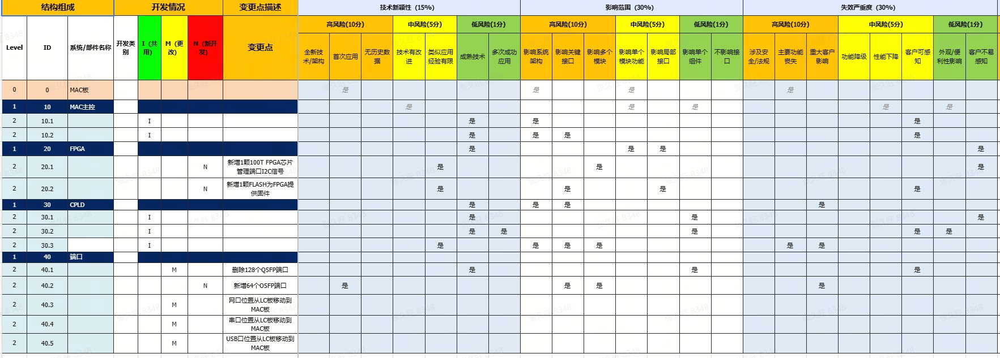
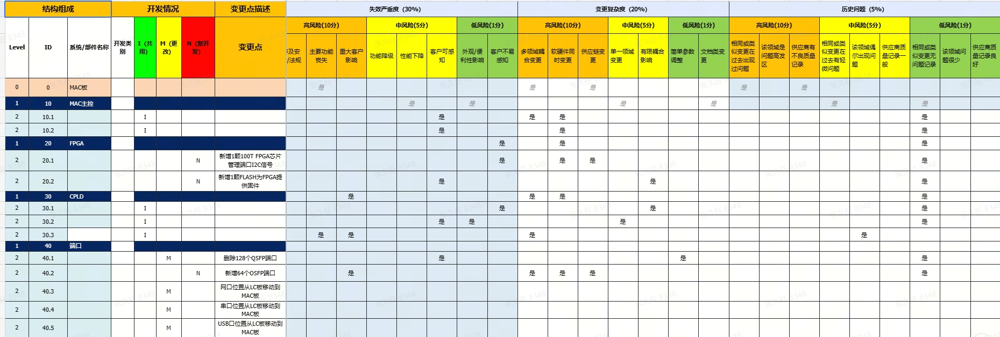

DRBFM触发评估表是DRBFM全生命周期管理流程的核心入口，用于系统化评估设计变更的风险等级，判定是否需要触发DRBFM深度分析。评估表采用五维风险评估模型，从技术新颖性、影响范围、失效严重度、变更复杂度、历史问题五个维度对每条LEVEL=0（系统级）变更点进行量化评分。
评估表仅针对LEVEL=0的变更点清单项进行五维评估，子级变更点（LEVEL=1/2/3）不单独评估，其风险已体现在系统级评估中。
五个评估维度及其权重如下：
每个维度提供高/中/低三组选项，用户逐项勾选"是/否/空白"：
| 选项组 | 选项数量 | 评分规则 | 得分含义 |
|---|---|---|---|
| 高组 | 3个选项 | 任一选项选"是" → 该维度得满分（10分） | 高风险，需重点关注 |
| 中组 | 2个选项 | 高组无"是"时，中组任一选"是" → 得中分（5分） | 中等风险，需适度关注 |
| 低组 | 2个选项 | 高、中组均无"是"时，低组任一选"是" → 得低分（1分） | 低风险，常规关注 |
| — | — | 三组均无"是" → 得0分 | 该维度无风险 |
评分优先级：高组 → 中组 → 低组，按优先级取最高分。即：高组有"是"则直接取10分，不再看中组和低组；高组无"是"才看中组；中组也无"是"才看低组。
| 组别 | 序号 | 选项描述 |
|---|---|---|
| 高组(10分) | 1 | 采用全新技术/架构，无公司内部应用经验 |
| 2 | 采用行业首例技术方案 | |
| 3 | 核心功能/性能指标超出现有平台能力 | |
| 中组(5分) | 4 | 技术方案有内部参考但应用场景差异较大 |
| 5 | 关键器件/材料首次使用 | |
| 低组(1分) | 6 | 技术方案有成熟内部参考，场景相似 |
| 7 | 仅参数调整，技术原理不变 |
| 组别 | 序号 | 选项描述 |
|---|---|---|
| 高组(10分) | 1 | 变更影响整机系统，涉及多个子系统交互 |
| 2 | 变更影响客户接口/业务面，客户直接感知 | |
| 3 | 变更影响3个及以上子系统/模块 | |
| 中组(5分) | 4 | 变更影响2个子系统/模块 |
| 5 | 变更影响单一子系统但涉及核心功能 | |
| 低组(1分) | 6 | 变更仅影响单一模块的辅助功能 |
| 7 | 变更范围局限于单一器件/组件 |
| 组别 | 序号 | 选项描述 |
|---|---|---|
| 高组(10分) | 1 | 失效可能导致人身安全风险或法规不符合 |
| 2 | 失效导致核心功能完全丧失，业务中断 | |
| 3 | 失效影响整机或网络级运行 | |
| 中组(5分) | 4 | 失效导致核心功能降级，客户业务受影响 |
| 5 | 失效导致辅助功能丧失，客户体验显著下降 | |
| 低组(1分) | 6 | 失效仅导致性能轻微下降，客户可容忍 |
| 7 | 失效仅影响外观或非功能性指标 |
| 组别 | 序号 | 选项描述 |
|---|---|---|
| 高组(10分) | 1 | 变更涉及全新设计，无历史基线参考 |
| 2 | 变更涉及多学科交叉（硬件+软件+结构+工艺） | |
| 3 | 变更导致接口定义重大修改 | |
| 中组(5分) | 4 | 变更涉及2个学科领域 |
| 5 | 变更对现有接口有局部调整 | |
| 低组(1分) | 6 | 变更仅涉及单一学科领域 |
| 7 | 变更为简单参数/配置调整 |
| 组别 | 序号 | 选项描述 |
|---|---|---|
| 高组(10分) | 1 | 同类变更在历史项目中发生过严重失效（H级） |
| 2 | 历史问题库中存在3条及以上相关失效记录 | |
| 3 | 历史问题尚未完全闭环 | |
| 中组(5分) | 4 | 历史问题库中存在1-2条相关失效记录 |
| 5 | 历史问题已闭环但措施有效性未充分验证 | |
| 低组(1分) | 6 | 历史问题已闭环且措施有效 |
| 7 | 无相关历史问题记录 |
五维评分完成后，系统按以下公式计算风险综合评分：
其中，各维度得分按上述"高组→中组→低组"优先级规则确定（10分/5分/1分/0分），加权求和后按比例映射至1-12分范围，综合评分结果保留一位小数。
| 维度 | 高组 | 中组 | 低组 | 维度得分 | 权重 | 加权得分 |
|---|---|---|---|---|---|---|
| 技术新颖性 | 有"是" | — | — | 10 | 15% | 1.50 |
| 影响范围 | 无"是" | 有"是" | — | 5 | 30% | 1.50 |
| 失效严重度 | 有"是" | — | — | 10 | 30% | 3.00 |
| 变更复杂度 | 无"是" | 无"是" | 有"是" | 1 | 20% | 0.20 |
| 历史问题 | 无"是" | 有"是" | — | 5 | 5% | 0.25 |
| 风险综合评分(1-12分) | 7.7 | |||||
| 风险综合评分 | 风险等级 | DRBFM触发建议 | 标识色 |
|---|---|---|---|
| ≥ 8分 | H（高风险） | 必须进行DRBFM分析 | |
| ≥ 5分 且 < 8分 | M（中风险） | 建议进行DRBFM分析 | |
| < 5分 | L（低风险） | 可以不进行DRBFM分析 |
注意：系统自动填充"DRBFM触发评估建议"和"最终DRBFM触发结论"，默认结论与风险等级一致。PSE和TSE复核时可手动修改最终结论。如拒绝系统建议，需在"拒绝建议理由"列填写理由。
以下为评估表五维评分的结构示意图，展示了评估表的完整布局：左侧为变更点清单的结构组成，右侧为五个维度的评分区域，每个维度包含高/中/低三组选项列。


前置条件：